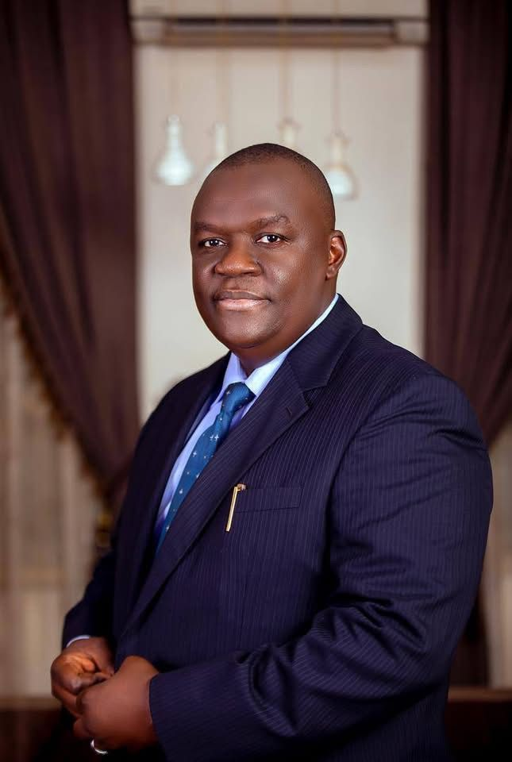

AVM Paul D. Masiyer (Rtd.)
HOUSE OF REPRESENTATIVES · MANGU/BOKKOS · 2027
Join the MovementThe Man Behind the Movement
Air Vice Marshal Paul D. Masiyer (Rtd.) was born and raised in Mangu/Bokkos Federal Constituency, Plateau State — the very land he now seeks to represent at the National Assembly. His roots in this constituency are not incidental. They are the reason he is running.
Growing up in Plateau State, AVM Masiyer developed a deep understanding of the aspirations and challenges of his people — the farming communities, the churches, the markets, the youth. That grounding never left him through three and a half decades of military service.
AVM Masiyer joined the Nigerian Air Force and rose through the ranks with a combination of technical excellence, strategic thinking, and unwavering dedication to duty. He attained the rank of Air Vice Marshal — the peak of commissioned service — earning the respect of peers and superiors across the armed forces.
Among his most senior appointments was his role as Chief of Logistics, Headquarters Nigerian Air Force (HQ NAF), where he was responsible for the procurement, supply chain, and operational logistics that keep the entire Air Force mission-ready. Managing resources at this scale demands the kind of precision, discipline, and integrity that defines AVM Masiyer's career.
He also served as Commandant of the Military Training Centre, shaping the training curriculum and standards for the next generation of Air Force officers — embedding discipline, integrity, and excellence into Nigeria's future military leadership.
Retirement from the military did not mean retirement from service. For AVM Masiyer, the end of his uniform career was the beginning of a different calling — one that brings the discipline of national defence directly to the community level.
"This movement is about unity. This is about collective development. This is about giving our people a stronger, reliable, and very experienced voice at the national stage."
— AIR VICE MARSHAL PAUL D. MASIYER (RTD.)

AVM Paul D. Masiyer (Rtd.) — in his own words
Career Timeline
Candidate — House of Representatives, Mangu/Bokkos
Officially declared intention to contest under the All Progressives Congress (APC).
Commandant, Military Training Centre — NAF
Shaped training curriculum and officer development standards for the Nigerian Air Force.
Chief of Logistics — Headquarters Nigerian Air Force
Managed procurement, supply chain, and operational readiness for the entire Nigerian Air Force.
Air Vice Marshal — Nigerian Air Force
Attained the peak of commissioned service after 35+ years of distinguished military career.
Progressive Senior Commands — NAF
Series of senior appointments demonstrating technical excellence and strategic leadership.
Commissioned Officer — Nigerian Air Force
Joined the Nigerian Air Force and began a career defined by service, sacrifice, and commitment.
Son of Mangu/Bokkos — Plateau State
Born and raised in the constituency he now seeks to represent. His roots are the reason he is running.